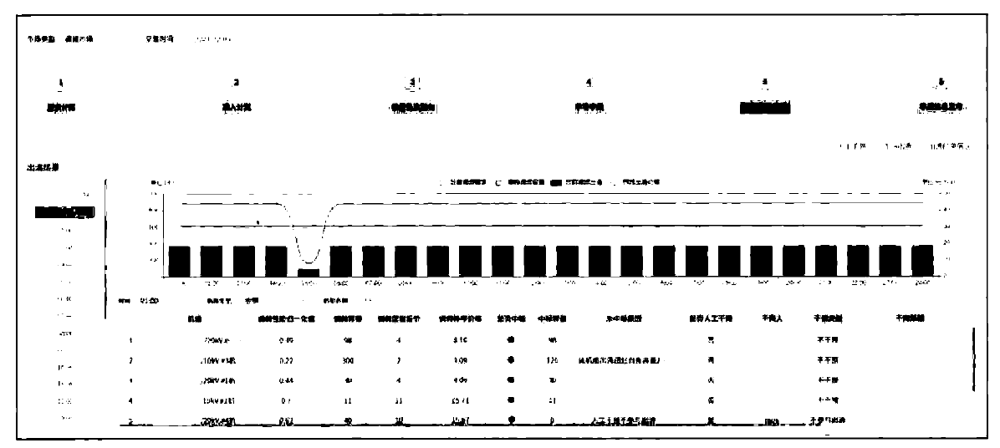
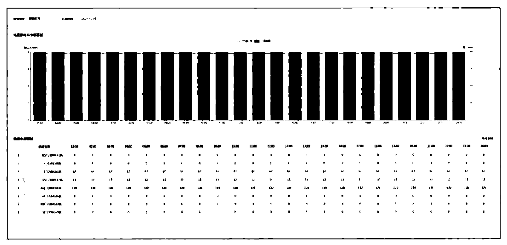
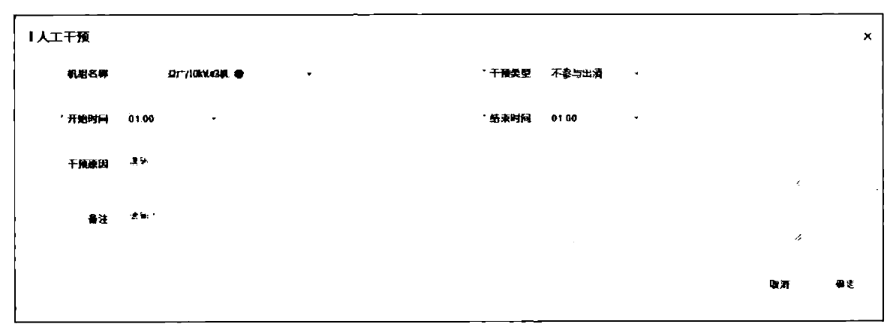
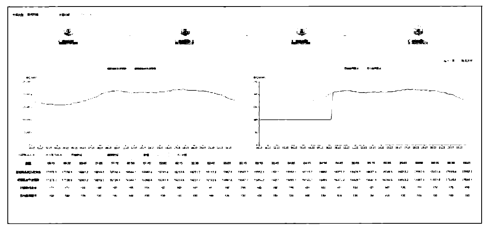
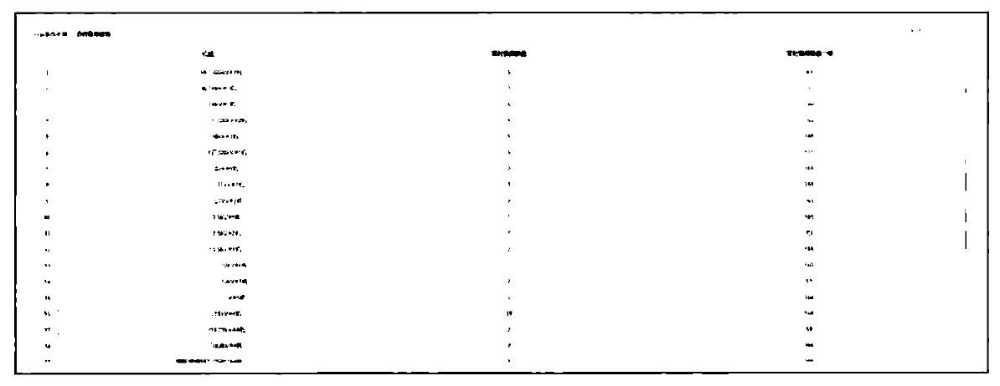
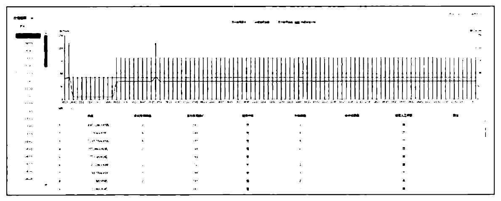
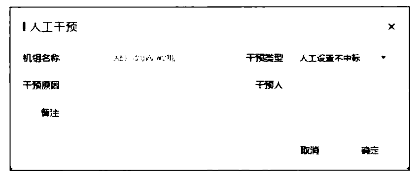
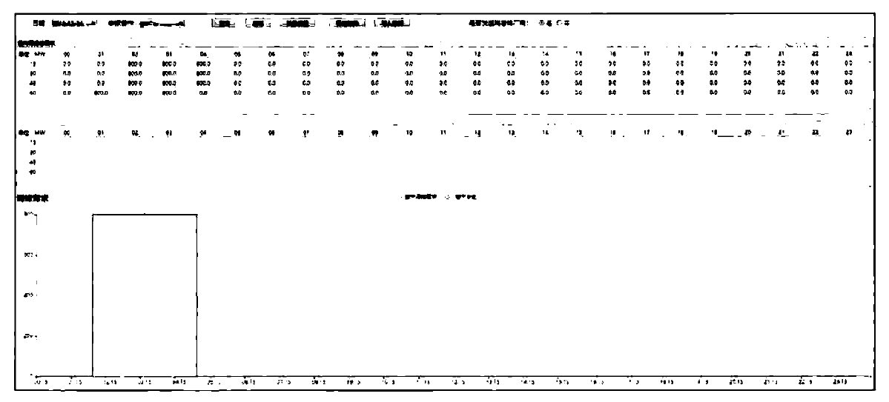
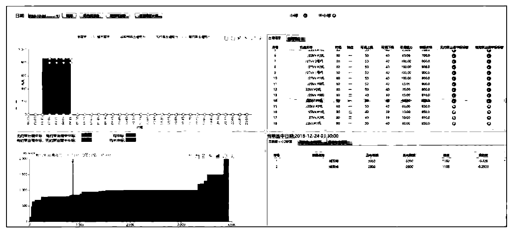

（3）调频性能数据。从调度自动化系统 AGC 应用功能中接收调频机组的调节精度、调节速率、响应时间等调频性能指标信息；该调频性能指标可用于调频机组参与市场出清的准入判断。
按照设定规则对调频辅助服务市场计算场景下的各类边界数据进行完整性、合理性校验，存在数据缺失或数据错误时按照严重等级给出告警。
24.1.3 调频市场出清
根据市场主体的市场申报数据，以机组组合状态、调频需求、机组调频性能、机组可调出力、调频状态等作为市场边界，以购买调频容量费用最小为目标，集中出清各交易时段的调频中标机组，形成调频市场出清价格，中标结果送AGC调用执行，调频市场出清界面如图24-4所示。

图24-4 调频市场出清
调频辅助服务市场可采用多种出清模式，包括：
（1）日前预出清与日内正式出清。日前开展调频市场预出清，预出清结果不用于最终调用及结算；日内开展正式出清，正式出清结果用于调用及结算。
（2）日前正式出清。日前开展调频市场正式出清，出清结果作为日前、日内计划编制的边界条件，同时用于调用及执行。
（3）日内正式出清。日前不开展市场出清，日内开展正式出清，出清结果用于调用及结算。
调频辅助服务市场可与电能量市场统一出清或顺序出清，顺序出清情况下，在电能量市场前出清时调频市场中标结果作为电能量市场的边界条件，使用中标机组的中标容量修正其参与电能量市场的可调上下限；在电能量市场后出清时，机组电能计划作为调频市场边界。
一般以 AGC 控制单元作为竞价单元参与调频市场竞价、出清，即单机控制单元以单机参与，套机控制单元以套机参与。
24.1.4 出清结果查询
查询调频市场出清结果，包括各交易时段出清总量、中标机组台数、市场出清价格以及中标机组、中标容量、调频性能等，其中市场出清价格一般包括调频容量出清价格、调频里程出清价格，出清结果查询界面如图24-5所示。

图24-5 出清结果查询
24.1.5 调频结果管理
在调频市场出清后，因电网安全运行要求或机组自身运行原因，可通过人工干预增加或取消调频机组。人工干预界面如图24-6所示，主要包括：
（1）人工增调、取消调频机组。
（2）全面准确记录人工干预信息，记录内容应包括操作人、操作时间、操作内容、操作原因等信息。

图24-6 人工干预
24.2 备用辅助服务市场
开展备用辅助服务市场化交易，包括备用需求计算、备用数据准备、备用市场出清、出清结果查询、备用结果管理。
24.2.1 备用需求计算
基于电网运行情况，按照系统负荷预测比例、备用参数等多种方式，计算备用辅助服务市场各交易时段的备用容量需求（如图24-7所示），支持对备用需求进行人工干预调整；按照市场规则向市场成员发布调频备用、系统负荷预测等市场相关信息。

图24-7 备用需求计算
24.2.2 备用数据准备
获取备用市场出清所需的申报类、运行类边界数据，形成备用市场出清计算场景，主要数据包括申报类数据、运行类数据。
（1）申报类数据。机组申报的备用市场量价信息，如图24-8所示。
（2）运行类数据。备用需求、机组组合、机组实时运行状态、系统负荷预测等边界数据。
按照设定规则对备用辅助服务市场计算场景下的各类边界数据进行完整性、合理性校验，存在数据缺失或数据错误时按照严重等级给出告警。
24.2.3 备用市场出清
根据市场主体的市场申报数据，以备用需求、系统负荷预测、机组组合等作为市场边界，以购买备用资源费用最小为目标，集中出清各交易时段的备用中标机组，形成备用

图24-8 备用数据准备-申报数据
市场出清价格。
备用市场出清一般分为日前市场出清、实时市场出清，可与电能量市场联合出清或顺序出清；顺序出清时备用市场出清结果作为电能量市场的边界条件。
24.2.4 出清结果查询
查询备用市场出清结果如图24-9所示，包括各交易时段出清总量、中标机组台数、市场出清价格以及中标机组、中标容量等。

图24-9 备用市场出清结果查询
24.2.5 备用结果管理
在备用市场出清后，因电网安全运行要求或机组自身运行原因，可通过人工干预设定机组备用容量。备用市场人工干预如图24-10所示，主要包括：
（1）人工指定或取消备用机组，设置机组备用容量。
（2）全面准确记录人工干预信息，记录内容应包括操作人、操作时间、操作内容、操作原因等信息。

图24-10 备用市场人工干预
24.3 调峰市场
开展调峰市场化交易，包括调峰需求计算、调峰市场数据准备、调峰市场出清、出清结果查询、调峰结果管理。
24.3.1 调峰需求计算
基于系统负荷预测、新能源预测、联络线计划、机组可调、机组组合等边界数据开展96时段电网平衡分析，针对不足时段计算调峰需求，支持对调峰需求进行人工干预调整；按照市场规则向市场成员发布调峰需求、系统负荷预测等市场相关信息。调峰需求界面如图24-11所示。

图24-11 调峰需求管理
24.3.2 调峰市场数据准备
获取调峰市场出清所需的申报类、运行类边界数据，形成调峰市场出清计算场景，主要数据包括申报类数据、运行类数据。
（1）申报类数据。机组申报的调峰市场报价及深调下限数据，其中深调报价一般按照50%负荷率以下分挡申报，如图24-12所示。
（2）运行类数据。调峰需求、机组组合、机组实时运行状态等边界数据。
按照设定规则对调峰市场计算场景下的各类边界数据进行完整性、合理性校验，存在数据缺失或数据错误时按照严重等级给出告警。
图24-12 调峰市场分挡报价情况
24.3.3 调峰市场出清
根据市场主体的市场申报数据，以机组组合状态、调峰需求、机组调峰下限、机组爬坡滑坡能力等作为市场边界，以购买调峰资源费用最小为目标，集中出清各交易时段的调峰中标机组，形成调峰市场出清价格。
调峰市场可采用多种出清模式，包括：
（1）日前预出清与日内正式出清。日前开展调峰市场预出清，预出清结果不用于最终调用及结算；日内开展正式出清，正式出清结果用于调用及结算。
（2）日内正式出清。日前不开展市场出清，日内开展正式出清，出清结果用于调用及结算。
调峰市场可与电能量市场统一出清或顺序出清；顺序出清情况下，调峰市场中标结果作为电能量市场的边界条件，中标机组不参与电能量市场优化。
24.3.4 出清结果查询
查询调峰市场出清结果如图24-13所示，包括各交易时段出清总量、中标机组台数、市场分档出清价格以及中标机组、分档中标电力等。
24.3.5 调峰结果管理
在调峰市场出清后，因电网安全运行要求或机组自身运行原因，可通过人工干预设定

图24-13 调峰市场出清结果
机组调峰容量。主要包括：
（1）人工指定或取消调峰机组，设置机组调峰容量。
（2）全面准确记录人工干预信息，记录内容应包括操作人、操作时间、操作内容、操作原因等信息。
24.4 辅助服务与电能量联合出清
电能与辅助服务独立出清是电能与辅助服务市场分别独立出清，可以先辅助服务后电能或先电能后辅助服务，先出清完成的市场结果作为后续市场出清的边界约束条件，每个市场在其独立出清时保证其所购买的电力资源成本最小。
电能与辅助服务联合出清是指在市场出清计算时根据电能与辅助服务的报价，考虑电能与辅助服务之间约束耦合关系，以电能与辅助服务总购买成本最小为优化目标，一次出清计算生成电能与辅助服务出清结果及价格。
优化目标为电能与调频备用等辅助成本之和最小，即
$$ \min F=\sum_{i=1}^{NT}\sum_{i=1}^{NI}[C_{i,t}+ST_{i,t}+SD_{i,t}+M_{i,t}] $$
(24-1)
式中： $ NT $ 为系统调度周期所含时段数； $ NI $ 为系统中参与调度的机组数； $ C_{i,t} $ 为机组 $ i $ 在 $ t $ 时的发电成本； $ ST_{i,t} $ 和 $ SD_{i,t} $ 分别为机组 $ i $ 在 $ t $ 时的启动成本和停机成本； $ M_{i,t} $ 为机组 $ i $ 在 $ t $ 时的调频备用成本。在电能量和辅助服务联合优化时，除了电能量约束之外，增加调频状态最大及最小经济出力限制、备用爬坡速率限制、备用竞价容量限制等，还需考虑能量与辅助服务联合约束。
联合出清可以实现最经济的电能与辅助服务安排，但其算法复杂，理解难度大；独立出清只能实现单个市场出清结果的成本最优，无法实现电能与辅助服务总成本最优，但其算法较为简单，易于理解。在电力现货市场初期，一般采用电能与辅助服务市场独立
出清模式，在市场成熟期，再采用电能与辅助服务联合出清模式。
24.5 本章小结
辅助服务作为一种重要的电力交易品种，是维护电力系统安全稳定运行、保证电量质量必要服务，与电能量存在相互耦合关系。本章重点介绍了调频、备用、调峰辅助服务市场应用功能，包括市场需求计算、市场数据准备、市场出清、出清结果查询、结果管理等模块，详细阐述了电能与辅助服务市场联合出清功能。
安 全 校 核
安全校核主要是为电力现货市场出清计算提供静态安全校核计算服务支撑，保障市场出清结果满足电网安全运行约束条件。安全校核向电力现货市场提供灵敏度信息和潮流安全分析结果，市场出清结果根据潮流安全分析结果并基于灵敏度信息对出清结果进行调整。考虑短路电流与出清结果之间非线性化关系，出清算法难以建立直接的短路电流控制约束条件，一般通过间接设置开机方式约束来控制短路电流，因此，短路电流计算不作为潮流安全分析的一个功能在本书中进行阐述。
25.1 计划拓扑生成与分析
计划方式生成的基础数据有电网模型、方式数据、母线负荷预测、联络线计划、发电计划、设备检修计划。静态安全校核利用检修反演机制，生成电网的正常运行方式，即以某历史方式数据为基础，在获取该方式对应的检修计划后，通过对检修计划的反演操作，如原先检修的设备予以并网，获得电网正常排排方式，然后根据校核时段的检修计划信息，进行相应的操作模拟，最终形成校核的电网拓扑。
计划方式生成将所有负荷节点的有功功率替换为母线负荷预测，将所有发电机功率替换为发电计划，将所有联络线节点注入功率替换为联络线计划。考虑到母线负荷预测精度存在一定偏差，当存在有功功率不平衡时，采用拉升母线负荷预测功率的方式保证功率平衡。负荷节点的无功功率可采用母线负荷预测无功功率和利用功率因数折算两种方法获得，其中功率因数可以使用规程规定的值，或利用历史数据统计得到的工程经验值。
利用交流潮流方法（PQ 解耦法、牛顿－拉夫逊法）获得未来断面的潮流分布，当交流潮流不收敛时，自动用直流潮流法计算，获得有功潮流分布。
25.2 基态潮流分析
基态潮流分析根据自动生成的校核断面潮流进行分析计算，判断基态潮流下的设备越限情况。
根据潮流结果判断电网各设备是否满足安全运行要求，主要检查线路潮流是否过载、变压器是否过负荷、稳定断面有功功率是否满足控制限额要求、母线电压是否满足运行电压范围要求。
基态潮流分析检验输电线路有功功率是否满足式（25-1），输电线路有功限额采用式（25-2）计算，即
$$ P_{\mathrm{L}}\leqslant P_{\mathrm{L,m a x}} $$
(25-1)
$$ P_{L,\mathrm{m a x}}=\sqrt{3}U_{L}I_{L,\mathrm{m a x}}\cos\varphi $$
（25-2）
式中： $ P_{L} $ 为线路有功功率； $ P_{L\text{max}} $ 为线路有功限额，MW； $ U_{L} $ 为线路运行电压，kV； $ I_{L\text{max}} $ 为线路长期电流上限，kA； $ \cos\varphi $ 为功率因数。
基态潮流分析校验变压器各侧绕组有功功率是否满足式（25-3），变压器额定有功采用式（25-4）计算，即
$$ P_{\mathrm{T}}\leqslant P_{\mathrm{T,m a x}} $$
(25-3)
$$ P_{\mathrm{T,m a x}}=S_{\mathrm{T}}\cos\varphi $$
(25-4)
式中： $ P_{T} $ 变压器绕组有功功率； $ P_{T\max} $ 为变压器绕组有功限额，MW； $ S_{T} $ 为变压器额定容量，MVA； $ \cos\phi $ 为功率因数。
基态潮流校核校验稳定断面有功功率是否满足式（25-5），稳定断面有功潮流采用式（25-6）计算，即
$$ P_{\mathrm{W D.n e g}}\leqslant P_{\mathrm{W D}}\leqslant P_{\mathrm{W D.p o s}} $$
（25-5）
$$ P_{\mathrm{WD}}{=}\sum_{i\in\mathcal{W}}K_{i}P_{i}\qquad P_{\mathrm{WD}}{=}\sum_{i\in\mathrm{WD}}K_{i}P_{i} $$
（25-6）
式中： $ P_{WD} $ 为稳定断面有功功率； $ P_{WD,pos} $ 为稳定断面正向限额，MW； $ P_{WD,neg} $ 稳定断面反向限额，MW；WD 为稳定断面组成元件集合； $ P_i $ 为第 i 个组成元件有功； $ K_i $ 为第 i 个组成元件有功系数。
基态潮流校核校验母线电压是否满足式（25-7），即
$$ U_{\mathrm{b u s,m i n}}\leq U_{\mathrm{b u s}}\leq U_{\mathrm{b u s,m a x}} $$
(25-7)
式中： $ U_{bus} $ 为母线电压幅值； $ U_{bus,max} $ 为母线运行电压上限；
25.3 静态安全分析
静态安全分析根据校核断面自动生成形成的校核断面潮流，分析 N-1 故障和指定故障集下的设备越限情况。
分析计算设备（或设备组合）开断后的潮流分布，并校验线路、变压器是否满足短时限额要求。
静态安全分析检验输电线路有功是否满足式（25-1），输电线路短时有功限额采用式（25-2）计算。不同的是， $ P_{L\max} $ 为线路短时有功限额， $ I_{L\max} $ 为线路短时电流上限。
静态安全分析校验变压器各侧绕组有功是否满足式（25-3），不同的是， $ P_{T\_{max}} $ 为变